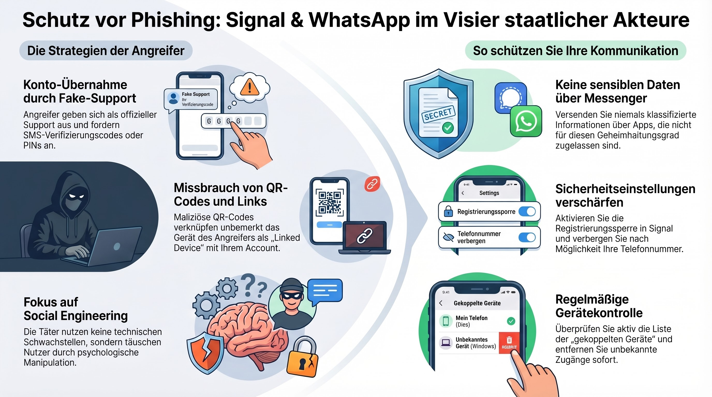
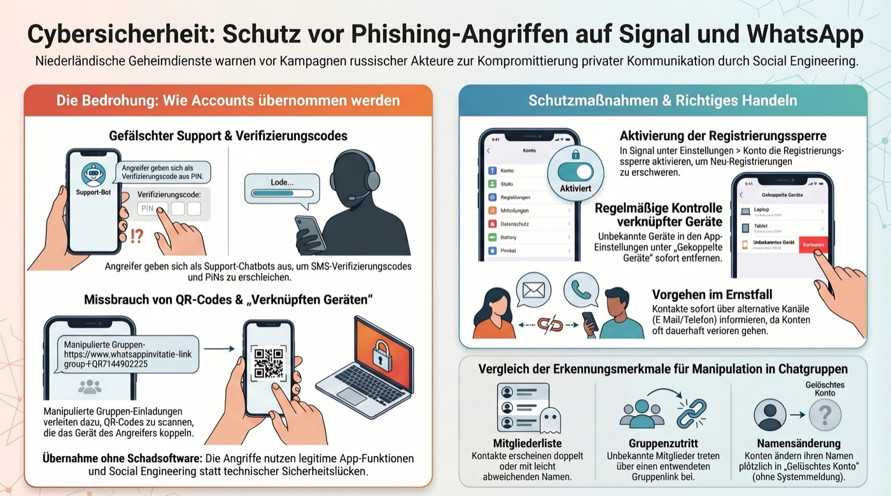

Kısaca: Saldırganlar bir mesaj aracılığıyla bir
QR kodu gönderir. Kodu tarayan kişi, hesabını gizlice yabancı bir
cihaza bağlar. Bu kılavuz 4 adımda saldırıyı nasıl tanıyacağınızı,
hesabınızı nasıl kurtaracağınızı, kanıtları nasıl saklayacağınızı ve
nasıl suç duyurusunda bulunacağınızı gösterir.
Arka plan: Bu yöntem özellikle Rusya'dan devlet
destekli saldırganlar („Star Blizzard" / „Coldriver")
tarafından aktivistlere, gazetecilere, diplomatlara ve askerî
personele karşı kullanılıyor. Ancak teknik, Signal veya WhatsApp
kullanan herkese karşı işe yarıyor.
Önemli — Lütfen önce okuyun:
Beklenmedik bir mesajdaki hiçbir QR kodunu asla
taramayın — tanıdığınız kişilerden gelse bile.
Önce o kişiyi arayın ve sorun.
Mesajı hemen silmeyin.
Önce bir ekran görüntüsü alın. Mesaj önemli bir kanıttır.
Saldırganlar mesajlaşma uygulamalarının normal bir özelliğini
kullanır: Signal ve WhatsApp, bir hesabın ek olarak başka bir
cihazda da kullanılmasına izin verir. Bunun için bir QR kodu
taranır. Saldırganlar sahte bir QR kodu gönderir ve sizin bunu
taramanızı umar.
Tipik kılıflar:
Sözde güvenlik doğrulaması:
Bir mesaj, hesabınızı „onaylamanız" ya da „doğrulamanız"
gerektiğini, aksi hâlde kapatılacağını söyler.
Sahte grup daveti:
Sözde bir davet bağlantısı, QR kodu bulunan bir web sitesine
götürür. Web sitesi Signal ya da WhatsApp gibi görünür.
Tanıdık kişilerden gelen mesaj:
Zaten ele geçirilmiş bir hesap, QR kodunu kendi kişilerine
iletir. Gönderen tanıdık görünür.
Aciliyet ve baskı:
„Sadece bugün", „Yoksa hesabınızı kaybedersiniz", „Önemli —
hemen harekete geçin". Güvenilir sağlayıcılar asla zaman
baskısı yapmaz.
Hatırlatma: Signal ve WhatsApp size bir
sohbette taramanız için asla bir QR kodu
göndermez. Başka bir cihaz bağlamak istiyorsanız, QR kodunu
ayarlar bölümünde kendiniz oluşturursunuz.
02
Acil önlemleri alma
Şimdi hesabınıza yabancı bir cihazın bağlı olup olmadığını
kontrol edin. Bu yalnızca birkaç saniye sürer.
Signal'de:
Signal'i açın.
Sol üstteki profil resminize dokunun.
Ayarlar'ı seçin.
Bağlı Cihazlar'a dokunun.
Listelenen her cihazı kontrol edin. Cihazı tanımıyor musunuz?
Cihaza dokunun ve Kaldır'ı seçin.
WhatsApp'ta:
WhatsApp'ı açın.
Ayarlar'a dokunun (sağ altta).
Bağlı Cihazlar'ı seçin.
Tanımadığınız her cihaza ve ardından
Oturumu kapat'a dokunun.
Ek güvenlik önlemleri:
Signal: Ayarlar → Hesap →
Kayıt kilidi'ni etkinleştirin.
Yalnızca sizin bildiğiniz bir PIN belirleyin.
WhatsApp: Ayarlar → Hesap →
İki adımlı doğrulama'yı etkinleştirin.
Altı haneli bir PIN belirleyin.
Telefonu ve uygulamayı güncelleyin:
Mevcut tüm güncellemeleri yükleyin.
Bilmekte fayda var: Yabancı oturumu
sonlandırdığınızda, saldırgan artık yeni mesajları okuyamaz.
Ancak zaten okunmuş mesajlar, saldırganın kopyasında kalmış
olabilir.
03
Kanıtları saklama
Polise yapılacak suç duyurusu için kanıtlar belirleyicidir.
Elinizde kalan her şeyi kayıt altına alın.
Belgelemeniz gerekenler:
QR kodunu içeren zararlı mesajın ekran görüntüsü.
Gönderen profilinin ekran görüntüsü
(ad, telefon numarası, profil resmi, zaman damgası).
Kaldırmadan önce bağlı cihazların ekran görüntüsü:
cihaz adı, işletim sistemi, son etkinlik.
Zaman kaydı:
Mesaj ne zaman geldi? Kodu (belki) ne zaman taradınız?
Oturumu ne zaman sonlandırdınız?
Önemli: Tüm ekran görüntülerini etkilenen
uygulamanın dışında saklayın — örneğin kendi
parolası olan bir bulut deposunda ya da bir USB bellekte.
04
Bildirme ve suç duyurusu
Şimdi sıra olayı resmî hâle getirmekte. Bu, başka insanları korur
ve yetkililerin bu örüntüyü tanımasına yardımcı olur.
BSI, saldırı verilerini toplar ve size teknik
danışmanlık sağlayabilir.
Uygulama içinde bildirme:
Signal: Sohbette mesaja uzun basın
→ Bildir ve engelle.
WhatsApp: Sohbette gönderene dokunun
→ aşağı kaydırın → Kişiyi bildir.
Kişilerinizi uyarma:
Hesabınız ele geçirildiyse, saldırganlar mesajı kişilerinize
iletmiş olabilir. Yakın kişilerinizi etkin biçimde bilgilendirin
— en iyisi telefonla.
Özel hedef grupları:
Gazeteci, aktivist, bir yardım kuruluşunda (STK) çalışan,
bir kamu kurumunda ya da orduda görevliyseniz, olayı ayrıca
eyaletinizin Siber Suç Merkezî İrtibat Noktasına
(Zentrale Ansprechstelle Cybercrime, ZAC)
ve kurum içi BT güvenliğinize bildirin.
Arka plan: Bu yöntem teknik olarak nasıl işliyor?
Signal ve WhatsApp, bir hesabın aynı anda birden çok cihazda
çalışmasına izin verir — örneğin akıllı telefon ve dizüstü
bilgisayar. Bunun için „Bağlı Cihazlar"
(Signal: „Gekoppelte Geräte") ya da
„Bağlı Cihazlar"
(WhatsApp: „Verknüpfte Geräte") işlevi vardır.
Yeni bir cihaz bağlamak isteyen kişi, uygulamada bir QR kodu
oluşturur. Diğer cihaz kodu tarar — ve böylece hesaba bağlanır.
Saldırganlar tam olarak bunu yapar: QR kodunu kendi
cihazlarında oluşturur ve size gönderir — bir güvenlik uyarısı ya da
davet gibi paketleyerek. Kodu tararsanız, hesabınızı saldırganların
cihazına bağlarsınız. Saldırganlar bundan sonra bütün yeni mesajları
okur.
Hollanda istihbarat servisi AIVD ve
BND bu tekniği özellikle Rusya devlet
destekli aktörlerde gözlemledi. Ancak teknik, suç örgütleri
tarafından da kopyalanıyor.
İnfografikler
İki infografik en önemli noktaları özetliyor.
Görselleri serbestçe paylaşabilirsiniz (TLP:CLEAR).

QR kod oltalamasının tanınma belirtileri.İnfografiğin metin sürümü
Uyarı işaretleri: 1) Beklenmedik bir mesajdaki QR kodu.
2) Hemen harekete geçme çağrısı. 3) Hesap kapatma tehdidi.
4) Normalde böyle mesajlar göndermeyen tanıdık bir kişiden
gelen mesaj. 5) QR kodu bulunan bir web sitesine götüren bağlantı.

QR kod oltalamasına karşı koruma önlemleri.İnfografiğin metin sürümü
Koruma adımları: 1) Uygulama ayarlarında bağlı cihazları
kontrol edin. 2) Tanımadığınız oturumları sonlandırın.
3) Kayıt kilidini (Signal) ya da iki adımlı doğrulamayı
(WhatsApp) etkinleştirin. 4) Uygulamayı ve işletim sistemini
güncel tutun. 5) Sohbet mesajlarındaki QR kodlarını asla
taramayın.
Açıklama videosu
Kısa bir videoda saldırıyı ve koruma önlemlerini açıklıyoruz.
Video YouTube kanalımızda bulunuyor.
Siz „Videoyu izle"ye dokunmadıkça YouTube'dan hiçbir şey
yüklenmez. Açtığınızda YouTube'un (Google LLC)
gizlilik koşulları geçerli olur.
Verbraucherzentrale (Alman tüketici merkezi),
Phishing-Radar içinde güncel dolandırıcılık
yöntemlerini sürekli toplar — şu anda hangi sahte e-postaların ve SMS'lerin
dolaşımda olduğunu. Oraya bir göz atmak, yeni yöntemleri erkenden tanımaya yardımcı olur.
Özgün belge ve infografikler TLP:CLEAR'dır —
serbestçe paylaşılabilir. Materyal koleksiyonları (GitHub ve Codeberg'de) henüz
hazırlık aşamasında; açıklama videosunu ise YouTube'da bulabilirsiniz.
🗎PDF kılavuzu: Signal / WhatsApp oltalamasıPDF, yaklaşık 9,4 MB — TLP:CLEARhazırlık aşamasında🛠GitHub — Tüm oltalama materyalleriPDF (DE + NL), video, 2 infografikhazırlık aşamasında🛠Codeberg — Ayna deposuAynı içerik, alternatif platformhazırlık aşamasında🎥YouTube — Açıklama videosuSignal ve WhatsApp'ta oltalama dolandırıcılığı↗
Rehberlerimizi; yasal bilgilerin, telefon numaralarının ve bağlantıların güncelliği açısından düzenli olarak gözden geçiriyoruz. Tüm web sitesinin durumunu Hakkımızda bölümünde bulabilirsiniz.
Erişilebilirlik
Görme
Yazı boyutu
Okuma
Disleksili kişiler için geliştirilen, yerel olarak eklenmiş OpenDyslexic yazı tipini ve daha geniş boşlukları kullanır.
Kullanım
Sesli okuma
Bu işlev etkinken, bir metin bölümüne tıkladığınızda o bölüm sesli okunur. Esc tuşu okumayı durdurur. Cihazınızın kendi ses çıkışı kullanılır — hiçbir dış hizmet yoktur.
Seçiminiz yalnızca bu cihazda yerel olarak saklanır (çerez yoktur).